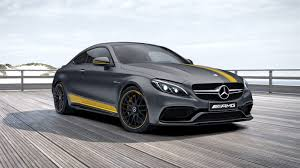
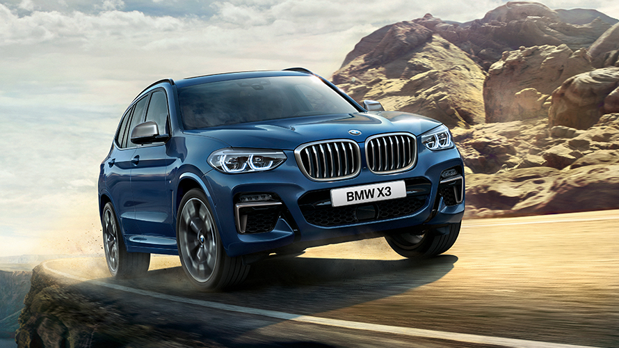

Mercedes
1886 року створено триколісний самохідний візок з бензиновим двигуном. Того ж року його творець Карл Бенц отримав патент на винахід. Перший у світі триколісний автомобіль запустили у серійне виробництво. Через сім років, поступившись Даймлеру першістю, Карл Бенц створив свій чотириколісний автомобіль, а наступного року ще досконаліша конструкція під дивною назвою «Велосипед» пішла в серію. 1901 року, незабаром після випуску Даймлером нової моделі «Мерседес-35PS» стає зрозумілим, наскільки «Бенц» відстає від прогресу. Щоб надолужити упущене, акціонери запрошують в компанію французького інженера Маріуса Барбару. Через технічні розбіжності Карл Бенц залишає засновану ним же компанію. Незабаром стало очевидно, — француз не виправдав покладених надій. Ідучи за логікою, що німецькі автомобілі мають робитися німецькими руками, у фірму, на посаду головного інженера, запросили Фріца Ерле. Знову не пощастило. І тільки з приходом в компанію талановитого інженера Ганса Нібеля справи поступово пішли в гору. 1909 року, створивши цілий ряд прекрасних легкових автомобілів, фірма побудувала найвідоміший гоночний автомобіль того часу «Блітц Бенц» з мотором потужністю 200 к.с. і карколомним об'ємом 21594 см³. У післявоєнні роки створено безліч нових моделей, більшість з яких з успіхом випускалися до середини двадцятих років. Всього з моменту початку виробництва 1886 року і до об'єднання з «Даймлер-Моторен-Гезелльшафт» 1926 року фірма «Бенц» виготовила 47555 автомобілів, включаючи легкові автомобілі, вантажівки і мінібуси.
BMW
BMW була заснована Карлом Фрідріхом Раппом у жовтні 1916 року, спочатку як виробник авіаційних двигунів, Bayerische Flugzeug-Werke. Округ Мюнхена — Milbertshofen був обраний тому, що він розташований поблизу від Flugmaschinenfabrik Густава Отто — німецького виробника літаків. У 1916 році компанія підписує контракт на виробництво двигунів V12 для Австро-Угорщини. Потребуючи додаткового фінансування, Рапп отримує підтримку Камілло Кастільйоні і Макса Фріца, компанія відтворюється як Bayerische Motoren Werke GmbH. Надмірне розширення стало причиною ускладнень, Рапп покинув компанію, і керівництво компанією було прийнято австрійським промисловцем Францем Джозефом Поппом у 1917 році, компанія була перейменована у BMW AG в 1918.
